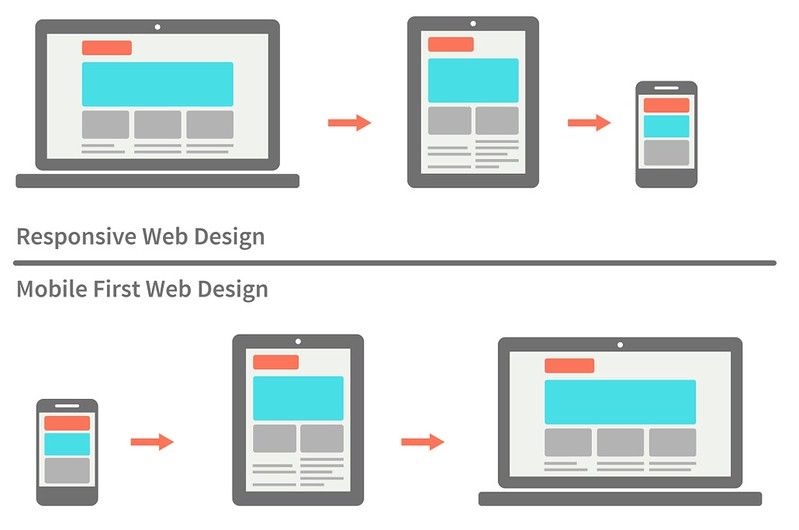

Son las 2 estrategias que tiene el Responsive Design para adaptar el contenido al tamaño de la pantalla, centrándose en los dispositivos con pantalla más pequeña (Mobile First) o a la inversa, centrándose en los dispositivos con pantalla más grande (Desktop First).
Las media queries se deben definir de la mayor a la menor.
Se utiliza la propiedad max-width para definir las media queries.
Las media queries se deben definir de la menor a la mayor.
Se utiliza la propiedad min-width para definir las media queries.
Es muy importante no combinar ambas propiedades al momento de definir nuestros ancho para el que se aplicara nuestros estilos
Tan solo con 2 media queries ya podemos tener confusion ya que luego de que nuestra pantalla supera los 1024px se aplicara el de nuestra media queries anterior, min-width: 480px
Entonces si ya empezamos a hacerlo con Mobile First nuestro proyecto debemos asegurarnos de trabajar siempre con min width Y si iniciamos nuestro proyecto con Desktop First hacerlo siempre con max-width